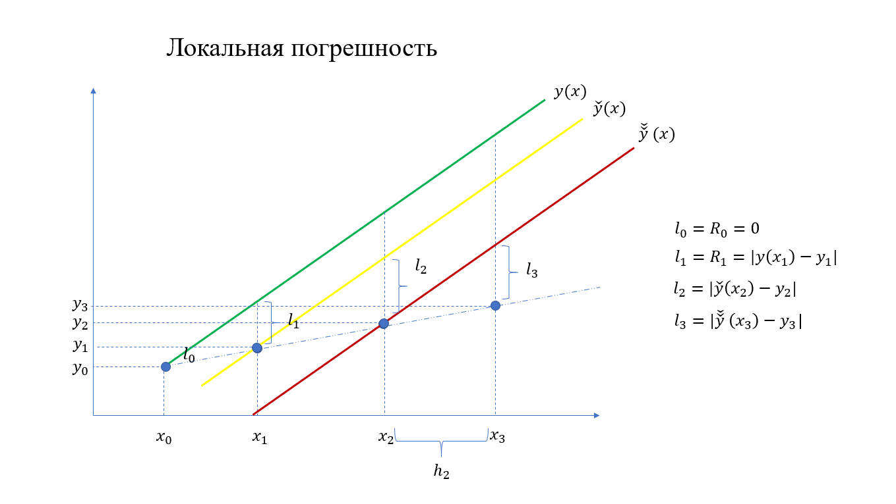
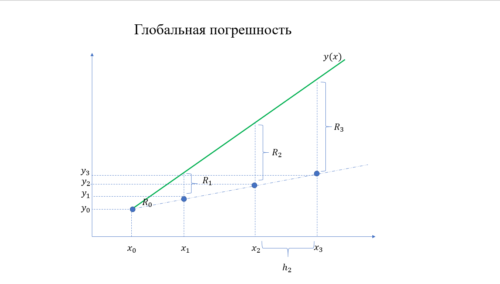

Численные методы
Домой
Ссылки
Библиография
6 семестр
Лектор
Перегудин Сергей Иванович
Семинарист
Фирюлина Оксана Сергеевна
Распределение задач
Белоус Егор
Беляева Александра
Муллаянов Тимур
Овсеенко Ксения
Розенгард Александр
Халтобина Мария
Шаршуков Владислав
Шашкин Илья
Шмидт Ян
Задания
Вычисление определённого интеграла
Методическое пособие
Формула Кардано для квадратурной формулы Гаусса
Практические способы оценки погрешности СКФ
Вычисление моментов весовой функции
Квадратурные формулы для случая $p(x) \equiv 1$
Решение задачи Коши
Методическое пособие
Расчётные схемы явных методов Рунге-Кутты
Погрешности:
 
5 семестр
Лектор
Перегудин Сергей Иванович
Семинарист
Фирюлина Оксана Сергеевна
Распределение задач
Белоус Егор
Беляева Александра
Ибрагимов Артем
Игумнов Максим
Казакова Анастасия
Муллаянов Тимур
Овсеенко Ксения
Пашкова Дарья
Розенгард Александр
Халтобина Мария
Шаршуков Владислав
Шашкин Илья
Шмидт Ян
Задания
Минимизация квадратичной функции
Интерполирование функции
Аппроксимация функции
4 семестр
Лектор
Перегудин Сергей Иванович
Семинарист
Квитко Александр Николаевич
Распределение задач
Иванова Анастасия
Бушуева Ангелина
Шайхиев Дмитрий
Плотников Елисей
Рудкевич Константин
Фролов Александр
Струев Александр
Морозов Александр
Белоус Егор
Шаршуков Владислав
Игумнов Максим
Гампер Елизавета
Милов Андрей
Коновалов Святослав
Тащилина Евгения
Записи лекций
2022-02-18
2022-02-22
2022-03-15
Задания
Вычисление функций
Решение СЛАУ
Метод Ньютона
Список литературы
[djvu]
В.М.Вержбицкий - Основы численнных методов
[djvu]
Дж.Дэннис, Р.Шнабель - Численные методы безусловной оптимизации и решения нелинейных уравнений
Сайт с полезной литературой